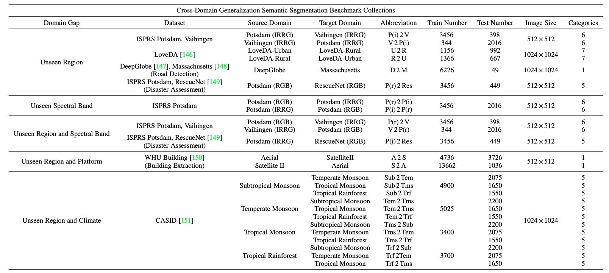
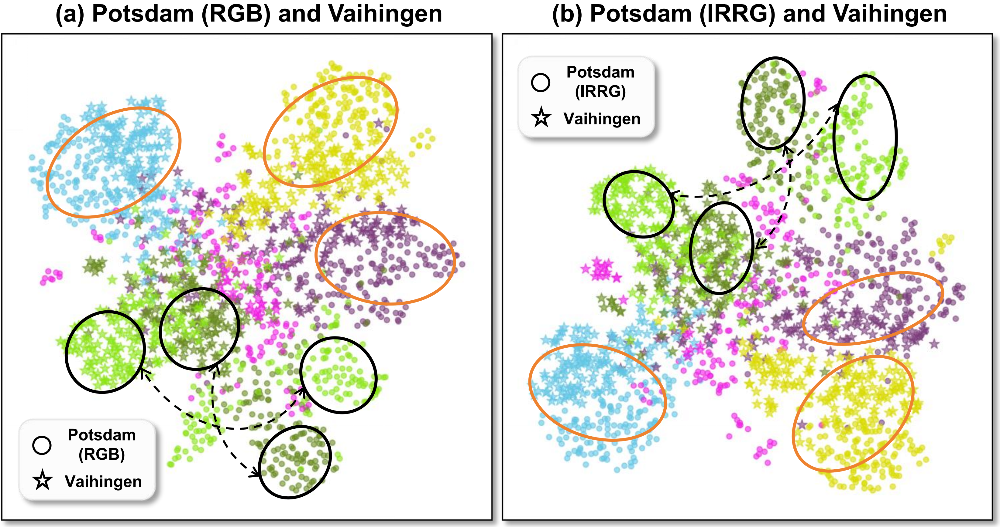
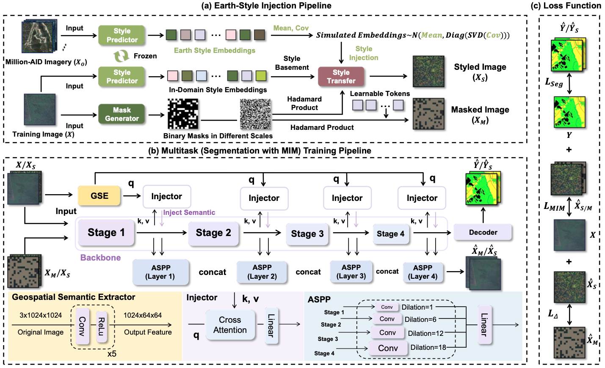
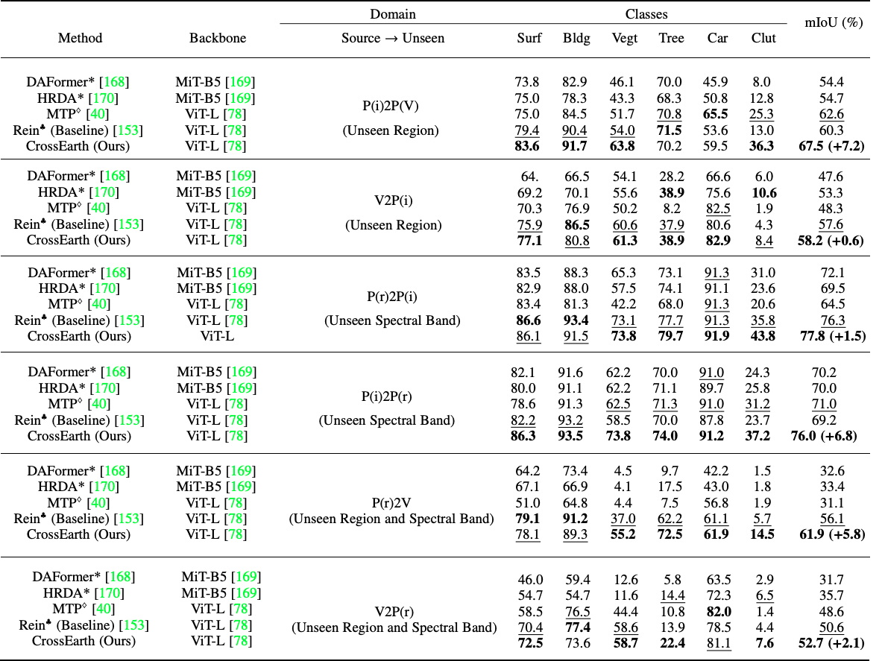

Benchmark Collection
We categorize all benchmark datasets based on the domain gaps between the source and unseen domain datasets.
Does CrossEarth generalize well? How?
(a) High-quality Representative Features
CrossEarth extracts features that cluster closely for the same class across different domains, forming well-defined groups in feature space. Moreover, CrossEarth features exhibit high inter-class separability, forming unique clusters for each class.

(b) Data Manipulation + Representation Learning
CrossEarth uses an Earth-Style Injection pipeline to create stylized and masked images, which are then processed by a Multi-Task Training pipeline for semantic segmentation and masked image modeling (MIM).

Refer to the pdf paper for more technical details of CrossEarth.
Quantitative Performance
Comparison on on Potsdam and Vaihingen Benchmarks
Refer to the pdf paper for more details on ablation studies and references.
Qualitative Results
First image description.
Second image description.
Third image description.

Third image description.

Third image description.
BibTeX
@article{crossearth,
title={CrossEarth: Geospatial Vision Foundation Model for Domain Generalizable Remote Sensing Semantic Segmentation},
author={Gong, Ziyang and Wei, Zhixiang and Wang, Di and Ma, Xianzheng and Chen, Hongruixuan and Jia, Yuru and Deng, Yupeng and Ji, Zhenming and Zhu, Xiangwei and Yokoya, Naoto and Zhang, Jing and Du, Bo and Zhang, Liangpei},
journal={arXiv preprint arXiv:2410.22629},
year={2024}
}